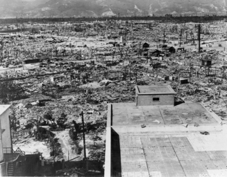

Jusqu'à présent, on pourrait penser que la bombe nucléaire est très pratique : grâce à son potentiel de destruction considérable, on est sûr d'être pris au sérieux. Mais cela ne
présente pas seulement des avantages:
Tout d'abord, il y a son coût qui rentre en jeu : de 1945 à aujourd'hui, 380 milliards d'euros ont été investi dans les forces nucléaires.
L'arme atomique, si elle n'est pas correctement surveillée et entretenue, peut exploser involontairement, ce qui pourrait avoir une incidence sur un rayon de 8km autour de l'explosion.
Des conventions de guerre ont été écrites et signées par la France notamment, et interdisent ce genre d'armes. Si on venait à s'en servir, il pourrait y avoir beaucoup de problèmes au niveau international (rupture des liens diplomatiques, se faire bombarder à son tour).
Avec ces armes, on peut potentiellement mettre fin à l'Humanité, si l'on ne se fait que la guerre avec ça.
Une bombe atomique utilise la radioactivité pour fonctionner. En plus de fournir une énergie gigantesque, elle éparpille dans toute la périphérie de son explosion des particules radioactives d'une durée de vie d'environ 2000 ans. En plus d'être détruits, les lieux deviennent inhabitables pour plusieurs siècles.
L'arme nucléaire est utilisée pour faire pression sur les autres pays, et peut servir à certains états à faire des menaces ou à le laisser faire ce qu'il veut, sous peine de bombardement.
Effets de la bombe atomique sur Hiroshima
Mais si l'arme atomique existe, c'est qu'elle présente tout de même un intérêt :
Elle garantit assez bien la paix pour l'état qui la possède, du moins il ne se fait pas attaquer
On est mieux écouté et pris en compte dans les relations internationales
On montre aux ennemis notre avancée technologique sur le sujet du nucléaire
Il y a de quoi penser que l'arme nucléaire n'a pas lieu d'être, au vu du nombre d'inconvénients par rapport au nombre d'avantages, mais ces trois avantages sont de taille. Autrement, ces armes n'existeraient pas.